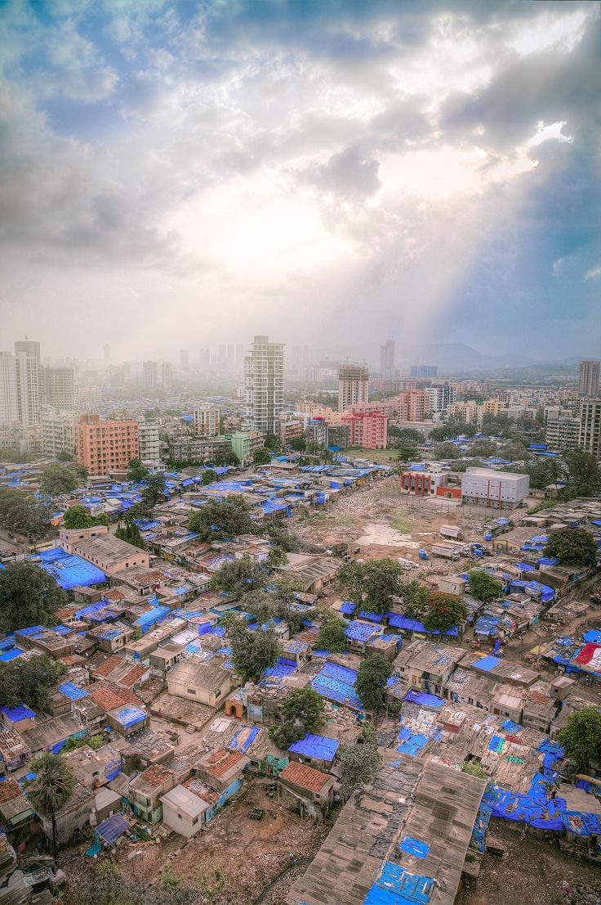

Aspects
Despite its reputation as a slum, Dharavi is a vibrant and bustling economic zone that has a lot to offer visitors. With an estimated annual turnover of $1 billion, Dharavi is home to a thriving informal economy that includes small-scale industries, such as garment manufacturing and food processing. The neighborhood is also known for its thriving recycling industry, with an estimated 80% of Mumbai's plastic waste being recycled in the neighborhood. Dharavi uses a circular economy system that is meant to reuse products and materials. People often do it not by choice, but because they have no other option. Also, this non oficial district of Mumbai has a surprisingly high literacy rate, with 70% of its residents being able to read and write. In addition, Dharavi has a vibrant community of artisans who produce high-quality leather goods, pottery, and textiles that are sold in markets throughout Mumbai and beyond. Visitors to Dharavi can explore the neighborhood's bustling markets, interact with local artisans, and learn about the community's rich cultural heritage. Despite its challenges, Dharavi has a strong sense of community and visitors can experience the warmth and hospitality of its residents. With its diverse population and surprising aspects, Dharavi is a unique destination that is well worth a visit.
